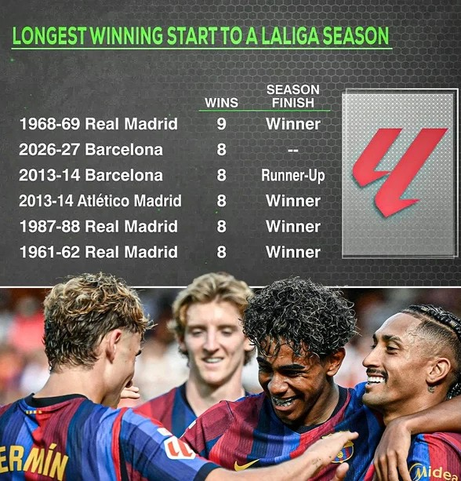
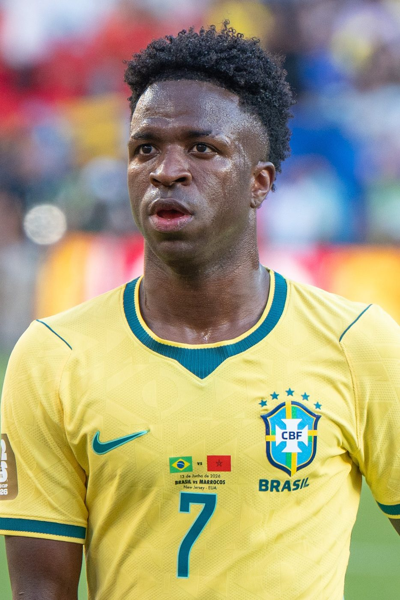
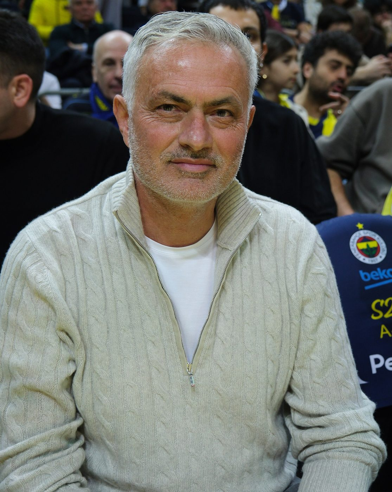

Eight league games, eight wins, 34 goals scored and only seven let in. Barcelona's start to the season has already equalled the best in the club's history, set by Gerardo "Tata" Martino's team in 2013–14. Now they're chasing something bigger: the best start anyone has ever made in La Liga.
That record belongs to Real Madrid. In 1968–69, under their coach Miguel Muñoz, Madrid won their first nine league games in a row, and went on to win the title. No team has managed it since. Barcelona came close in 2013–14, winning their first eight before a goalless draw at Osasuna stopped them. This season's team needs one more win to draw level with Madrid's record.

Look at the list. Of the teams that have won their first eight or more, four went on to win the league: Real Madrid in 1961–62, 1968–69 and 1987–88, and Atlético Madrid in 2013–14. The one that didn't was Barcelona in 2013–14, who finished second behind Atlético. A perfect start doesn't guarantee a trophy, but it's a very good sign.
The record run: can Barça make it nine?
Game nine is a tough one: Real Betis away, on Saturday 17 October at La Cartuja, the big stadium in Seville where Betis are playing while their own ground is rebuilt. (Kick-off is 6.30pm in Spain, which is 3.30am Sunday in Sydney.) Betis are formidable at the moment. They're third in the table, they beat Osasuna 5–2 last weekend, and on Wednesday they came from behind to beat Porto 3–2 in the Champions League. Their coach, Manuel Pellegrini, used to manage Manchester City and Real Madrid, so he knows a thing or two about big games.
And here's the twist. If Barcelona win in Seville, their very next league match is El Clásico against Real Madrid at Camp Nou on Sunday 25 October. So the chance to break the record outright, with ten wins in a row, would come against the very club that holds it. You couldn't make it up. (Before that, Barça also visit Paris Saint-Germain in the Champions League on Tuesday.)
Barça fell behind in Istanbul when Alexey Batrakov scored after 28 minutes. Then they took over. João Cancelo equalised just before half-time, and Fermín López, Anthony Gordon and Karim Adeyemi all scored within the first 20 minutes of the second half. That's two wins out of two in the Champions League, too.

Betis will make it hard, and La Cartuja will be loud. But this Barça team has Raphinha in the form of his life and Yamal setting up everything. We think they'll emulate Madrid's 1968–69 side: Real Betis 1–3 Barcelona. Record equalled, Clásico set up. Grab the popcorn.

Last issue, we told you about Vinícius Júnior's red card against Villarreal, for pulling Nathan Saliba's hair. Now the Spanish football federation's disciplinary committee has decided his punishment, and it's a big one: a four-match suspension. Two matches are for the hair-pull itself, which counts as violent conduct, and two more are for the angry way he reacted to being sent off.
That means Vinícius will miss Real Madrid's next four league games: Sevilla this Sunday, El Clásico at Camp Nou, Racing Santander and Valencia. His next La Liga game is expected to be against Celta Vigo on 22 November. He can still play in the Champions League, because the ban only applies to Spanish league matches. Vinícius, who apologised straight after the game, has questioned the timing of the announcement, and insists he has never been violent towards another player.

Even without Vinícius, Madrid had a night to remember. José Mourinho took his team to Roma, his old club, and with 57 minutes gone they were 3–1 down. Marten de Roon had put Roma ahead, Mbappé equalised with a deflected long-range shot (his 72nd Champions League goal, in his 100th game in the competition), and then Donyell Malen scored twice in six minutes. The Stadio Olimpico was bouncing.
And then: madness. In the 83rd minute, Carlos Espí scored. Two minutes later, Endrick headed in. And in the 90th minute, defender Antonio Rüdiger smashed in a volley to win it 4–3. ESPN noted that all three late goals came from corners. It was an improbable comeback, and Mourinho celebrated like a man who'd just won the lottery.
Roma 3–4 Real Madrid: the scoreline rollercoaster
Barcelona v Real Madrid · Sunday 25 October · Camp Nou. Kick-off is 9pm in Spain, which is 7am on Monday 26 October in Sydney: a perfect pre-school treat. Barça will be chasing either the record or revenge. Madrid will be missing Vinícius, with Mbappé carrying the load. Before then, Madrid host Sevilla on Sunday and RB Leipzig in the Champions League on Wednesday.